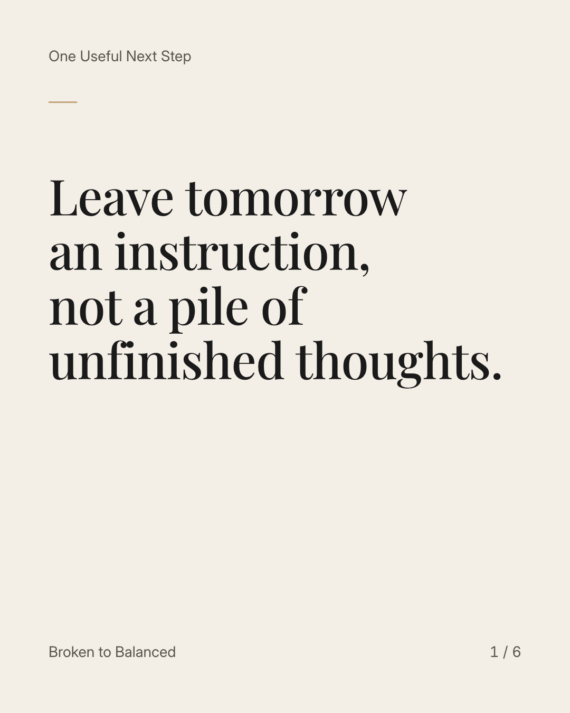
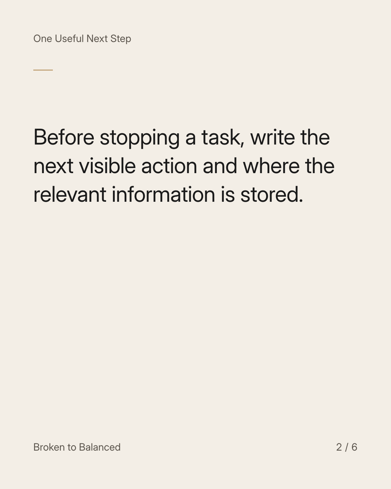
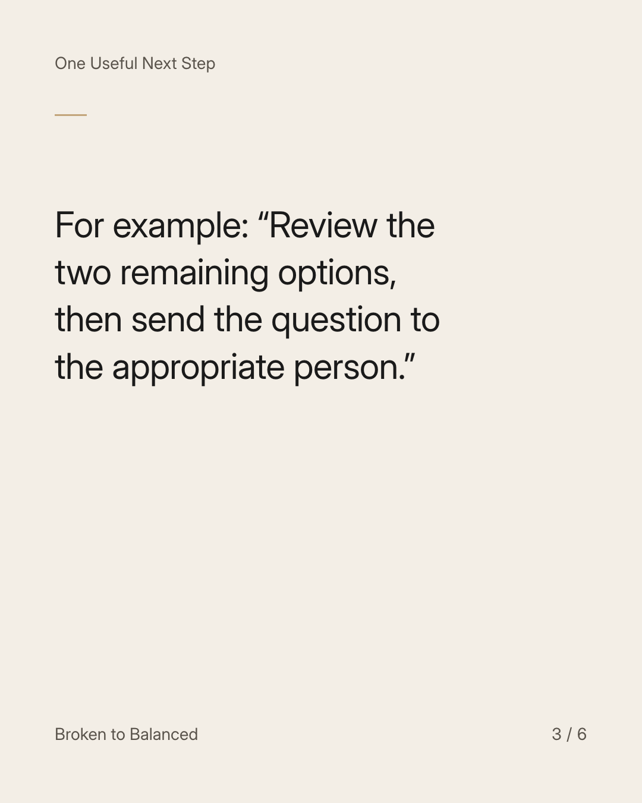
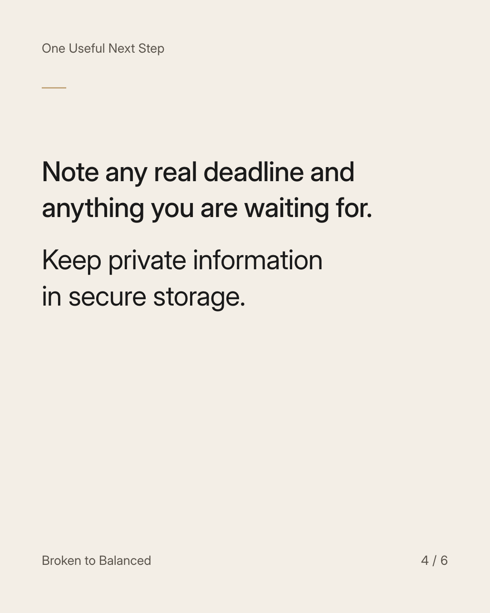
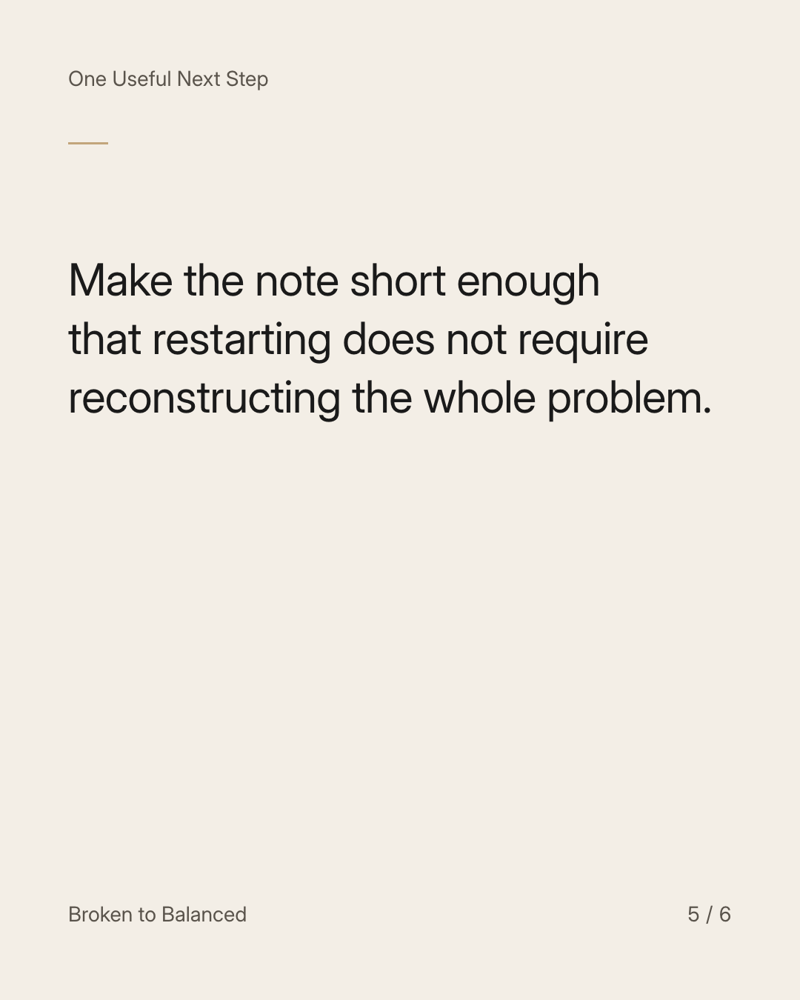
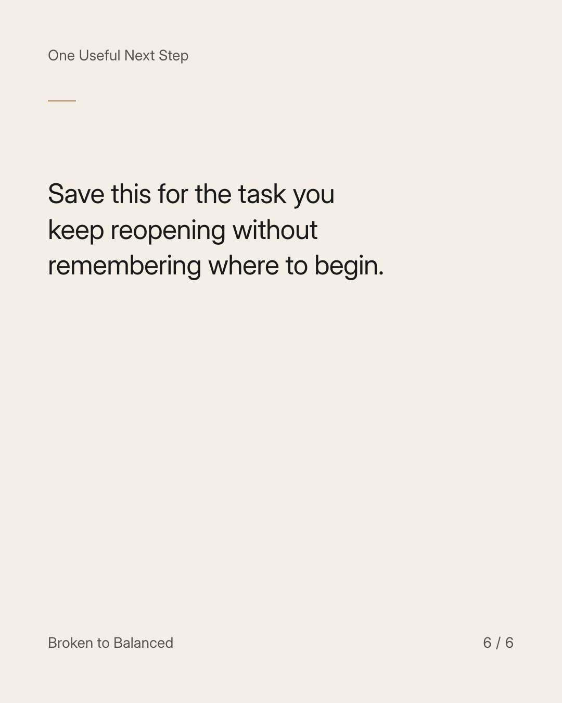

Exact text and accessibility text
Leave tomorrow an instruction, not a pile of unfinished thoughts.
Slide 1 of 6. Leave tomorrow an instruction, not a pile of unfinished thoughts.


Exact text and accessibility text
Before stopping a task, write the next visible action and where the relevant information is stored.
Slide 2 of 6. Before stopping a task, write the next visible action and where the relevant information is stored.


Exact text and accessibility text
For example: “Review the two remaining options, then send the question to the appropriate person.”
Slide 3 of 6. For example: “Review the two remaining options, then send the question to the appropriate person.”


Exact text and accessibility text
Note any real deadline and anything you are waiting for. Keep private information in secure storage.
Slide 4 of 6. Note any real deadline and anything you are waiting for. Keep private information in secure storage.


Exact text and accessibility text
Make the note short enough that restarting does not require reconstructing the whole problem.
Slide 5 of 6. Make the note short enough that restarting does not require reconstructing the whole problem.


Exact text and accessibility text
Save this for the task you keep reopening without remembering where to begin.
Slide 6 of 6. Save this for the task you keep reopening without remembering where to begin.
Exact caption
Plain-text fallback: select and copy the caption.